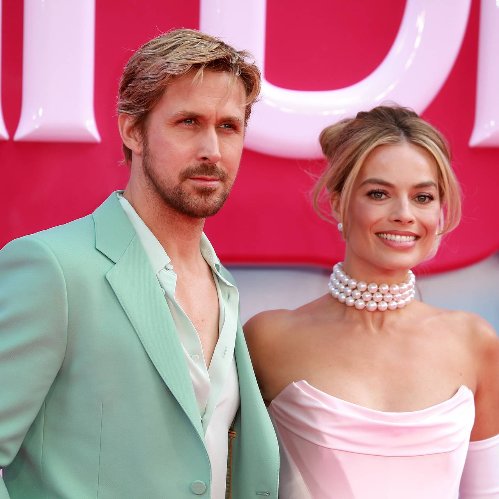
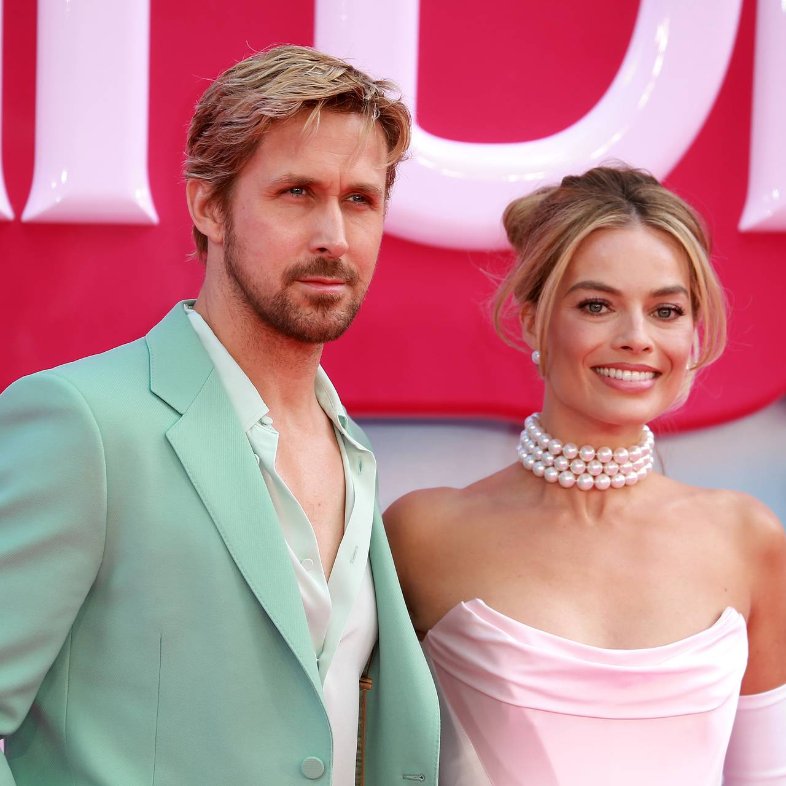

Канадський актор, лауреат премії National Board of Review (2006) та «Супутник» (2007).
Відомий за ролями у фільмах «Дневник пам'яті», «Ла-Ла Ленд», «Бегущий по лезвию 2049», «Барбі» та багато інших.
Народився 12 листопада 1980 року в місті Онтаріо, Канада. Боже бережи Канаду ☨
Розпочав свою акторську кар'єру у віці 12 років, знявшись у телешоу «Клуб Міккі Мауса».
Здобув широке визнання завдяки своїй ролі у фільмі «Дневник пам'яті» (2004).
За свою кар'єру співпрацював з такими відомими режисерами, як Дені Вільнев, Ніколас Віндінг Рефн та Шейн Блек.
Окрім акторської кар'єри, Гослінг також є музикантом та співзасновником джаз-клубу в Лос-Анджелесі.
 

Райан Гослінг - лівша.